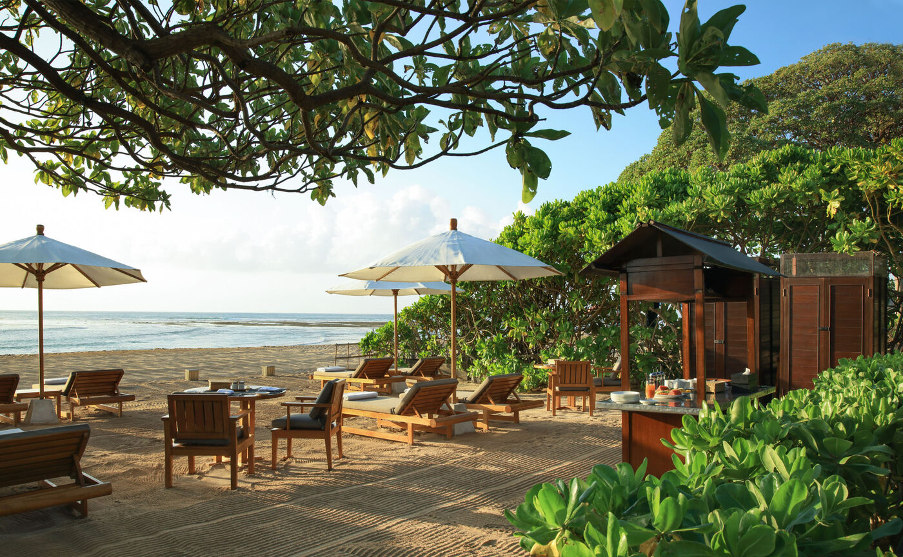

Aman Villas at Nusa Dua has no dining room and no bar. Each villa comes with two butlers and a chef instead, and the table goes wherever you put it: a coconut-husk barbecue on the sand, a candlelit balé in the garden, a beanbag under the frangipani for movie night.
The menu is written in the morning. The chef has been to Jimbaran market before you are up, and the butler arrives at breakfast with what came back in the basket: reef fish, prawns, whatever the boats landed. You say what you feel like, Indonesian or not, and where you want to eat it. There are two dining pavilions in the villa that each seat ten, a living room that opens onto the pool, the pool terrace itself, and the Beach Terrace down on the sand. Nothing on the property has a set hour or a set place.
The barbecue is the one to book first. Coconut husks go on the coals late in the afternoon and the chef cooks the market fish with tomato sambal, chicken grilled the Lombok way, skewers of satay, and lays out the salads Balinese families eat with them. The other fixed idea is the movie, screened in the garden after dark with fresh popcorn and beanbags on the grass. The frangipani drop their flowers on the lawn while the film runs.
What stayed with Aman
The address has history. Kerry Hill and Danilo Capellini designed Amanusa here in 1992, thirty-five thatched suites above the fairways of the Bali National Golf Club, and the resort ran under Aman for twenty-five years until the management contract ended on 28 February 2018. The hotel passed to other hands. The villas on the estate did not. They were built as the private residences of the resort, and Aman kept them, along with the Beach Terrace on the sand below, and runs them now as a property in their own right.
The scale is domestic in the way only Balinese estates are. The Six-Bedroom Villa sits on 4,605 square metres with a swimming pool at the centre of it. The Five-Bedroom has an open-air dining pavilion for ten and an air-conditioned library. The Four-Bedroom Villas link their bedrooms by garden walkways to a central two-storey house with terraces and a pool. A further 4,000-square-metre compound takes bookings as a two- or three-bedroom villa, which is where most couples and small families end up. Every stay includes the airport run both ways, breakfast, the two butlers and the chef, and a car on call for the Nusa Dua tourism complex next door.

The Beach Terrace at first light, before the loungers are taken · Courtesy of Aman
The temple on the beach
The wellness page was rewritten last week, and the new entry is a temple. Pura Geger stands on the shore south of the villas and is rarely opened to anyone outside the village that keeps it. Aman guests can now be received there for a private blessing, a Hindu priest offering prayers for strength and resilience, holy water, grains of consecrated rice pressed to the forehead. It joins a Ku Nye massage on the Tibetan model, warm Himalayan salt and rose quartz followed by a head massage, and yoga sessions in the Hatha and Ashtanga schools taught in the villa.
The fourth entry is a person. Pak Bagjo Indrijanto works in the Javanese tradition, a private session of spiritual reading, meditation and what the practice calls the channelling of divine energy, toward the state Javanese philosophy names Lerem, a settled mind. The programme is called Tapa Brata Mengening. It happens in your own living room, which is the point of the place; the spa, like the restaurant, is wherever you are.
The chef goes to Jimbaran market before you wake. Breakfast is where you find out what the boats brought in.
The Splendid EditSand and cliffs
The beach is reef-fringed and white, and the Beach Terrace on it belongs to the villas alone. Mornings there start with a picnic breakfast; afternoons run to kayaks, snorkelling over the reef, a sail, or a board and a surf lesson along the peninsula's southern coast. Boats can be chartered to the islands offshore. For sunset the drive is to Uluwatu, the eleventh-century sea temple on its limestone cliff at the tip of the Bukit, half an hour down the peninsula and a world away from the manicured lawns of the tourism complex.
The Villa Escape offer, valid until 31 March 2027, pairs two nights here with three at Amandari above the Ayung Gorge. The Nusa Dua half includes daily lunch, a beach picnic breakfast, a candlelit dinner, a family movie night, a children's activity each day, four hours of car and driver daily, a bottle of local sparkling wine and a Megibung feast, the shared Balinese dinner served on a menu inspired by the late King of Karangasem. Book three nights on their own and a fourth comes free. Denpasar airport is twenty minutes up the road, and the butler will already know what time you land.
Villa sizes, inclusions, dining, wellness and offer terms from aman.com (Aman Villas at Nusa Dua pages updated July to September 2026). Amanusa's 1992 design credit and the February 2018 end of Aman's management contract as reported by Luxury Travel Advisor.
Photography courtesy of Aman — © Aman, Aman Villas at Nusa Dua